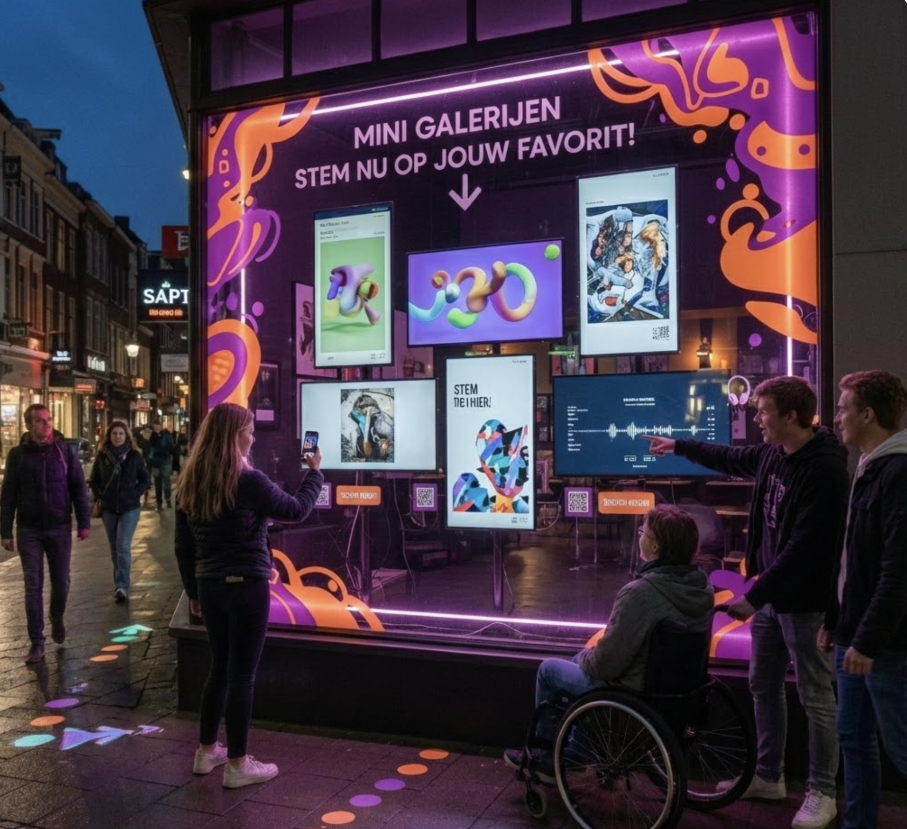
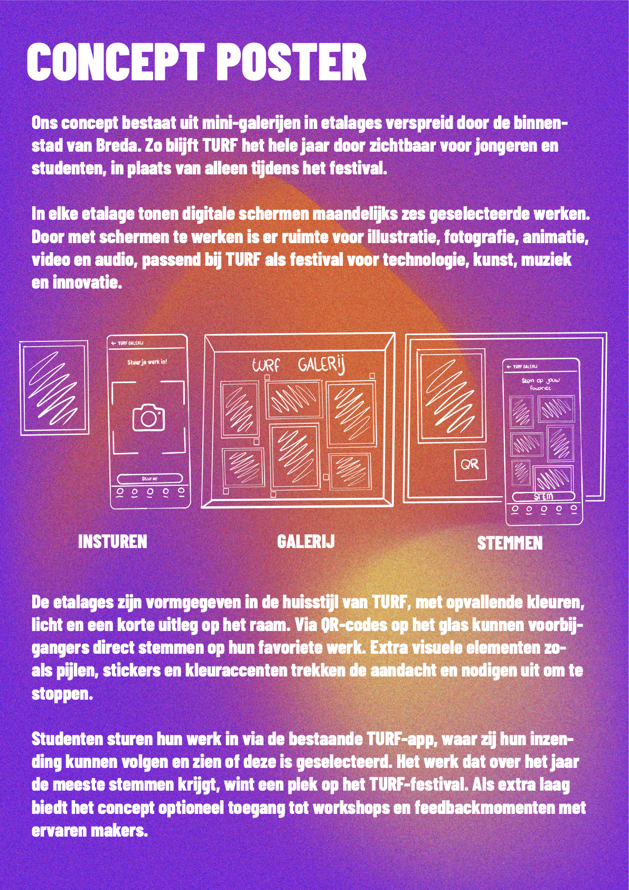

← Terug naar projecten
TURF
Concept • Visual Design • Storytelling

Over het project
Voor TURF, een jaarlijks stadsevent in Breda dat kunst, muziek, design, technologie en samenleving samenbrengt, onderzocht ik hoe een samenwerking tussen TURF en het onderwijs zichtbaar kan worden in de stad.
Ik ontwikkelde een concept voor een fysieke etalage waarin studenten hun werk kunnen tentoonstellen en voorbijgangers kunnen stemmen. Zo krijgen studenten een laagdrempelig podium en kunnen zij elkaar verder helpen. Door het concept te prototypen en feedback te verzamelen, ontdekte ik hoe belangrijk duidelijke communicatie en een veilige omgeving zijn. Daarom kunnen studenten ervoor kiezen om hun werk anoniem te laten zien.

